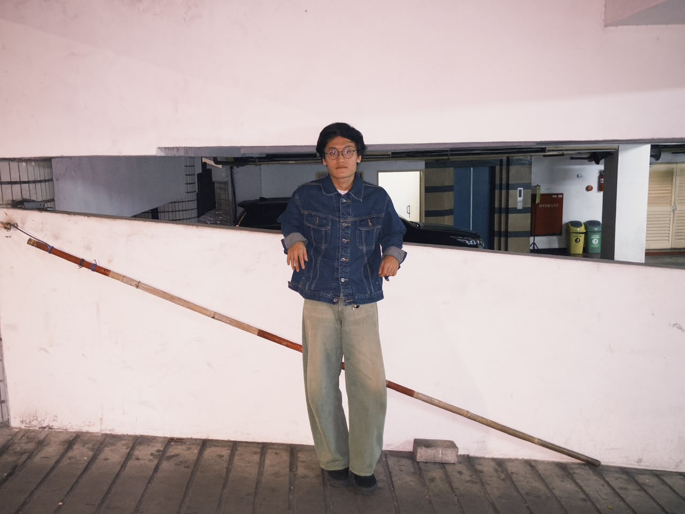

Tentang Saya
Nama saya Fazle Azka Machvianto, saya lahir pada tanggal 13 Maret 2005. Saat ini saya sedang berkuliah di Universitas Budi Luhur, mengambil Fakultas Teknik Informatika dengan Program Studi Sistem Informasi.
Mahasiswa Sistem Informasi, Universitas Budi Luhur.

Nama saya Fazle Azka Machvianto, saya lahir pada tanggal 13 Maret 2005. Saat ini saya sedang berkuliah di Universitas Budi Luhur, mengambil Fakultas Teknik Informatika dengan Program Studi Sistem Informasi.